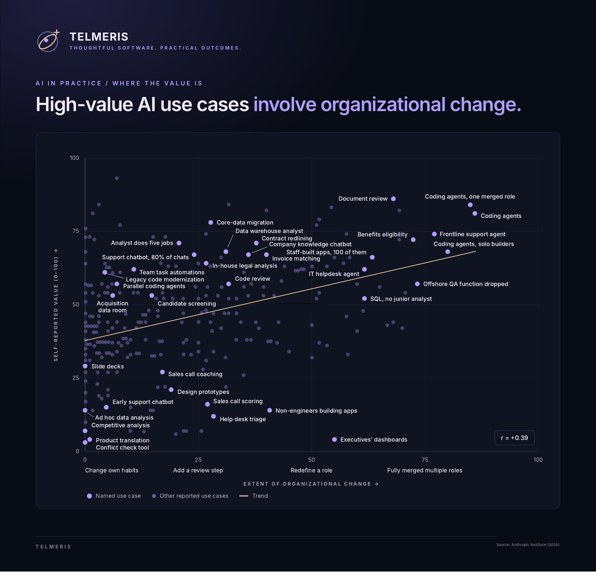

The Real Value of AI Is in Rethinking How We Work
The biggest opportunities in AI may not come from doing the same tasks faster. They come from rethinking the workflows around them.
When a new tool arrives, the first question is often where it can save time. That is a useful place to start, but it can make us focus on a single task while overlooking the process around it.
A team might spend hours collecting information, checking it, moving it between systems, and preparing a decision for someone else. Automating one step could make that step quicker. Looking at the whole workflow may reveal a better opportunity: reduce duplicate entry, bring useful context together, and make routine decisions easier to review.
One chart from the Anthropic Institute maps reported value against the extent of organizational change across AI use cases. Its upward trend is a reminder to examine how the work changes along with what a tool can do.

Start with the work, not the tool
Before choosing an AI capability, map what happens today. Who starts the process? What information do they need? Where does work wait, get repeated, or require correction? Which decisions need a person’s judgment?
This makes the opportunity concrete. It also helps distinguish a task that could be assisted by AI from a step that needs clearer rules, a system connection, or a simpler handoff.
Redesign the workflow around people
Useful AI implementation gives people a better way to do the work. A system might prepare a first draft, summarize incoming information, or flag an item for review. The team can then decide where human judgment belongs and how exceptions should be handled.
The goal is not to add automation everywhere. It is to make the process easier to complete, easier to understand, and dependable in the situations that matter.
Measure the result that matters
Set a useful baseline before changing the workflow. Depending on the work, that could include time to complete, manual effort, errors and rework, or how smoothly a handoff happens. After a small rollout, compare the experience with that baseline and ask the people using it what changed.
Those observations guide the next step. Keep what helps, adjust what causes friction, and expand only when the result is clear.
Make a focused first move
AI can create value when it helps a team rethink how work flows from start to finish. Begin with one real process, involve the people who know it, and choose a change that can be evaluated. The most useful improvement may be a new tool, a different handoff, or a combination of both.